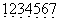

个人乐理自学笔记
本节内容参考自三分钟音乐社 《零基础学音乐·自学乐理第二季》 1-38节
基础知识
乐音与噪音
乐音：音高（频率）固定，振动规则的音。钢琴等乐器发出的是乐音，听起来悦耳、柔和。
噪音：振动不规则，音高也不明显的音。风声、雨声、机器轰鸣声是噪音，大多数打击乐器（鼓、镲、沙锤等）发出的是噪音，听起来刺耳。
音的物理性质
音高：指音调的高低。由音的频率决定，频率是发音体在单位时间内的振动次数。
音值：指音的持续时间。
音强：指音的响度。由发音体的振幅大小决定。
音色：指不同声音表现在波形方面的与众不同的特性。音色与发音体的材料、结构等有关。
唱名
用来唱的名字，也就是do,re,mi,fa,sol,la,si。在简谱上对应1,2,3,4,5,6,7。
音名
即声音的名字，声音是物体振动产生的，不同的声音会有不同的振动频率，而同一个声音的振动频率是固定的。因此同一个音名的频率不会改变，永远对应同一个音。
钢琴键与音名
钢琴一共有88个键调号
唱名对应的音名不是固定的，同一个唱名不一定对应同一个音名。唱名与音名的对应关系取决于调号。
调号的格式为“唱名=音名”，简谱采用首调唱名法，如1=C表示的是C大调，即唱名do对应音名C，以此类推唱名re,mi,fa,sol,la,si分别对应音名D,E,F,G,A,B。而1=D则表示是D大调，此时唱名do对应音名D。
首调与固定调
首调唱名法：将大调中的主音唱为do，如C大调中将C唱为do，D大调中就将D唱为do。简谱通常使用首调。
固定调唱名法：在任何调式中，都将C4（中央C）唱为do，其他音以此类推。五线谱通常使用固定调。
半音与全音
观察图1所示的一组钢琴键，不难发现C到D、D到E、F到G、G到A、A到B间都有黑键，而E到F间与B到C间没有黑键。也就是说E到F与B到C是直接相邻的，便可以称E到F、B到C间的音高距离为一个半音。
半音指的是相邻的两个音间的距离，而全音距离是半音的两倍。C到D、D到E、F到G、G到A、A到B间的音高距离为一个全音。
C到♯C、♯C到D的距离是一个半音。
升降号
♯为升号，表示升一个半音；♭为降号，表示降一个半音。𝄪为重升号，表示升一个全音；𝄫为重降号，表示降一个全音。
加上升降符号后的一组钢琴键如上图所示，可以发现同一个键可以用不同的音名表示出来，而实际上这些音是同一个音，只是写法不同，这些对应同一个音的不同音名被称作等音。至于使用哪个音名，这取决于所处的音乐语境。
音的分组
对完整的88键钢琴进行分组，共分为9组，如下图所示：霍尔赫姆兹音调记号法
命名分大字组、小字组、大字N组与小字N组。
大字组/大字N组的音名大写，小字组/小字N组的音名小写；
大字N组音名右下角写N，小子N组音名右上角写N。
科学音调记号法
将9个组从左至右命名为0到8。直接记为“大写音名+数字”的形式。
例如小字一组的C可以按霍法记为\(c^1\)，也可按科法记为C4。
中央C与标准音
小字一组的C（即C4）被称作中央C。
小字一组的A（即A4）被称作标准音，其频率确定为440Hz。
音域
乐器能够发出的声音范围，对于钢琴来说是\(A_2\)到\(c^5\)。
人声的音域通常情况下为\(g\)到\(d^2\)，正好覆盖小字一组，因此对于简谱中的“1=C”，其中的C对应钢琴中小字一组的C（中央C）。
高音点与低音点
1=C时，以小字一组为基准，小字一组的CDEFGAB对应简谱1234567。小字二组对应简谱加一个高音点，即\(\dot 1\dot 2\dot 3\dot 4\dot 5\dot 6\dot 7\)，小字三组对应简谱则加两个高音点，以此类推。大字组对应简谱加一个低音点，即，大字一组对应简谱则加两个低音点，以此类推。
纯八度
纯八度是音程的一种，指相邻音组中相同音名的两个音之间的音高距离。纯八度的两个音（如C3与C4），其频率比正好为1:2。当两个音的振动频率比接近简单整数时，两个音听起来会很相近，很协和，感觉像同一个音。
调式
若干高低不同的乐音，围绕某一有稳定感的中心音，按一定的音程关系组织在一起，成为一个有机的体系，称为调式。
调式有很多种，包括大调式、小调式、中古调式、五声调式等。
自然大调是大调式的一种，当七个音按照“全全半全全全半”的规则排列时，构成的是自然大调。
简谱中“1=C”表示的是C大调，CDEFGAB间的音高距离符合“全全半全全全半”的规则，是自然大调的一种。此外有D大调、E大调等。
音阶
将调式中的所有音，以主音开始到主音结束，由低到高或由高到低以阶梯状排列起来，被称作音阶。
如C大调的音阶就可以表示为“CDEFGABC”，这里最后面的C比最前面的C高了一个八度。此外“CBAGFEDC”、“CDEFGABCBAGFEDC”、“CBAGFEDCDEFGAB”也可称作C大调的音阶。
| 1=C | C | D | E | F | G | A | B | C |
| 1=♯C(第一个黑键) | ♯C | ♯D | ♯E | ♯F | ♯G | ♯A | ♯B | ♯C |
| 1=♭D(第一个黑键) | ♭D | ♭E | F | ♭G | ♭A | ♭B | C | ♭D |
| 1=D | D | E | ♯F | G | A | B | ♯C | D |
| 1=♭E(第二个黑键) | ♭E | F | G | ♭A | ♭B | C | D | ♭E |
| 1=E | E | ♯F | ♯G | A | B | ♯C | ♯D | E |
| 1=F | F | G | A | ♭B | C | D | E | F |
| 1=♯F(第三个黑键) | ♯F | ♯G | ♯A | B | ♯C | ♯D | ♯E | ♯F |
| 1=♭G(第三个黑键) | ♭G | ♭A | ♭B | ♭C | ♭D | ♭E | F | ♭G |
| 1=G | G | A | B | C | D | E | ♯F | G |
| 1=♭A(第四个黑键) | ♭A | ♭B | C | ♭D | ♭E | F | G | ♭A |
| 1=A | A | B | ♯C | D | E | ♯F | ♯G | A |
| 1=♭B(第五个黑键) | ♭B | C | D | ♭E | F | G | A | ♭B |
| 1=B(第七个白键) | B | ♯C | ♯D | E | ♯F | ♯G | ♯A | B |
| 1=♭C(第七个白键) | ♭C | ♭D | ♭E | ♭F | ♭G | ♭A | ♭B | ♭C |
自然大调的所有音阶如上表所示，一共有十五个大调，对应十二个音。其中第一个黑键上的“1=♯C”与“1=♭D”、第一个黑键上的“1=♯F”与“1=♭G”、第七个白键上的“1=B”与“1=♭C”是等音调，调式中的所有音完全相同，只是音名不同。
为了方便起见，大调中的音名最好不要含有重升重降符号，第二个黑键上的“1=♯D”、第四个黑键上的“1=♯G”、第五个黑键上的“1=♯A”其大调内音名含有重升符号，不符合方便的原则，因此没有列在上表中。